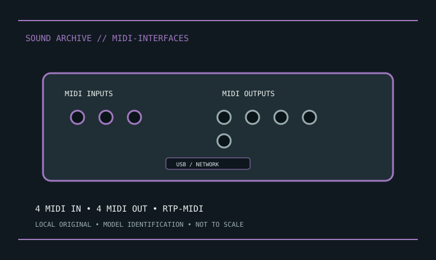

[ INDIVIDUAL MODEL // SOUND HARDWARE ]
iConnectivity mioXM
MIDI router with USB and Ethernet RTP-MIDI; 4 DIN inputs and 4 DIN outputs; Auracle-configured routing.

Model-specific specifications
| Exact model / scope | iConnectivity mioXM. Back up Auracle routing/network identity, label ports, and observe USB-device power limits. |
|---|---|
| Bus / host | USB or network-connected MIDI device; not an audio converter. |
| Documented functions / connectors | MIDI router with USB and Ethernet RTP-MIDI; 4 DIN inputs and 4 DIN outputs; Auracle-configured routing. |
| Conversion / formats | No PCM ADC/DAC conversion. |
| Drivers / OS | Use the linked model-specific manufacturer support/manual page. Driver and supported OS availability depends on release; no undocumented OS compatibility is asserted. |
| Power / microphone | No microphone preamps or phantom power. |
Compatibility & preservation
Back up Auracle routing/network identity, label ports, and observe USB-device power limits.
- Photograph model/revision, connectors and included accessories before service.
- Retain the matching manual, driver/firmware and known-working host/routing configuration.
- Follow documented signal levels, connector pinout and power requirements; physical fit alone is not compatibility.
Manufacturer sources
- Manufacturer product information — iConnectivity mioXMProduct/model source; match the exact revision and board.
- Manufacturer support and documentationOfficial model documentation, drivers and OS compatibility information.